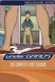

What is this site?
Stephen's Profile
Browser Extension
Stephen Klancher
Recent
Overall
Year Overview
Series
Lists
Undergrads
List contains: 13 items, 0.2 hours.
Seasons:
1
|
Title Search (4+ characters):
Group:
None
Example Group: Me and Stephen
Who's seen it:
No filter
Everyone
No One
Anyone
Anyone Has Not
Who's commented:
No filter
Everyone
No One
Anyone
Anyone Has Not
Netflix:
No Filter
Available for Instant Watch
Netflix Link Known
Netflix Link Unknown
Missing Data:
No Filter
Runtime
Season
Release Year (YYYY) or Decade (YYYx):
Sort:
Normal
Newest Episodes First
Episodes in Order
Recently Watched First
Watched in Order
Newest Releases First
Releases in Order
Stephen Klancher
...has seen 13
...has seen 0.2 hours
Timeline

Season 1
Party (2001)
Airs on 2001-04-22
S1 - E1 of
Undergrads
Stephen Klancher
: SEEN
Traditions (2001)
Airs on 2001-04-29
S1 - E2 of
Undergrads
Stephen Klancher
: SEEN
Virgins (2001)
Airs on 2001-05-06
S1 - E3 of
Undergrads
Stephen Klancher
: SEEN
New Friends (2001)
Airs on 2001-05-13
S1 - E4 of
Undergrads
Stephen Klancher
: SEEN
Drunks (2001)
Airs on 2001-06-08
S1 - E5 of
Undergrads
Stephen Klancher
: SEEN
Roommates (2001)
Airs on 2001-06-15
S1 - E6 of
Undergrads
Stephen Klancher
: SEEN
Jerks (2001)
Airs on 2001-06-22
S1 - E7 of
Undergrads
Stephen Klancher
: SEEN
Rivalries (2001)
Airs on 2001-06-29
S1 - E8 of
Undergrads
Stephen Klancher
: SEEN
Financial Aid (2001)
Airs on 2001-07-06
S1 - E9 of
Undergrads
Stephen Klancher
: SEEN
Identity Crisis (2001)
Airs on 2001-07-22
S1 - E10 of
Undergrads
Stephen Klancher
: SEEN
Work Study (2001)
Airs on 2001-07-29
S1 - E11 of
Undergrads
Stephen Klancher
: SEEN
Risk (2001)
Airs on 2001-11-04
S1 - E12 of
Undergrads
Stephen Klancher
: SEEN
Screw Week (2001)
Airs on 2001-11-01
S1 - E13 of
Undergrads
Stephen Klancher
: SEEN
Watched an episode not known by IMDb?
Season:
-
Episode:
Date:
Comment: